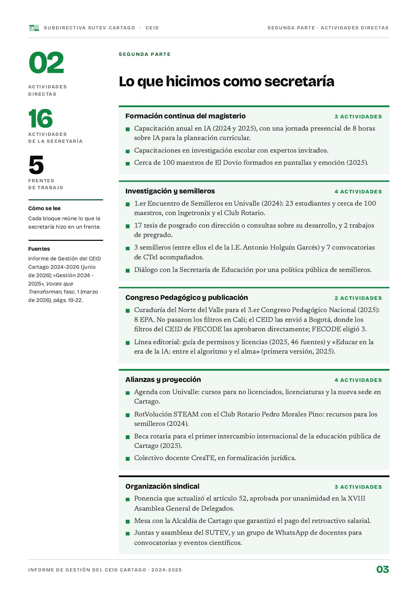

Segunda parte
Lo que hicimos como secretaría
Dieciséis actividades directas en cinco frentes: formación, investigación y semilleros, Congreso Pedagógico y publicación, alianzas y organización sindical.
PDF · 1 pág. · 157 KBCada bloque reúne lo que la secretaría hizo en un frente entre 2024 y 2025.
Investigación y semilleros4
Alianzas y proyección4
Formación continua del magisterio3
Organización sindical3
Congreso Pedagógico y publicación2
Fuente: Informe de gestión 2024-2025, segunda parte (16 actividades).
Formación continua del magisterio
- Capacitación anual en IA (2024 y 2025), con una jornada presencial de 8 horas sobre IA para la planeación curricular.
- Capacitaciones en investigación escolar con expertos invitados.
- Cerca de 100 maestros de El Dovio formados en pantallas y emoción (2025).
Investigación y semilleros
- 1.er Encuentro de Semilleros en Univalle (2024): 23 estudiantes y cerca de 100 maestros, con Ingetronix y el Club Rotario.
- 17 tesis de posgrado con dirección o consultas sobre su desarrollo, y 2 trabajos de pregrado.
- 3 semilleros (entre ellos el de la I.E. Antonio Holguín Garcés) y 7 convocatorias de CTeI acompañados.
- Diálogo con la Secretaría de Educación por una política pública de semilleros.
Congreso Pedagógico y publicación
- Curaduría del Norte del Valle para el 3.er Congreso Pedagógico Nacional (2025): 8 EPA. No pasaron los filtros en Cali; el CEID las envió a Bogotá, donde los filtros del CEID de FECODE las aprobaron directamente; FECODE eligió 3. Su historia está en el reconocimiento a las ocho EPA.
- Línea editorial: guía de permisos y licencias (2025, 46 fuentes) y «Educar en la era de la IA: entre el algoritmo y el alma» (primera versión, 2025).
Alianzas y proyección
- Agenda con Univalle: cursos para no licenciados, licenciaturas y la nueva sede en Cartago.
- RotVolución STEAM con el Club Rotario Pedro Morales Pino: recursos para los semilleros (2024).
- Beca rotaria para el primer intercambio internacional de la educación pública de Cartago (2025).
- Colectivo docente CreaTE, en formalización jurídica.
Organización sindical
- Ponencia que actualizó el artículo 52, aprobada por unanimidad en la XVIII Asamblea General de Delegados.
- Mesa con la Alcaldía de Cartago que garantizó el pago del retroactivo salarial.
- Juntas y asambleas del SUTEV, y un grupo de WhatsApp de docentes para convocatorias y eventos científicos.
Así se ve en el informe
1 página